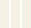
-
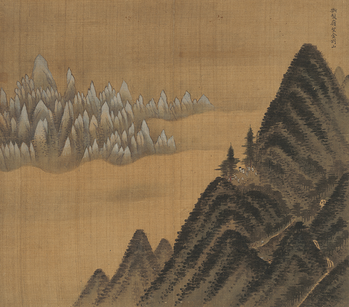
Album of GeumgangsanFirst Trip to Geumgangsan Mountain in 1711
-
 Clearing after Rain on Mount Inwang
Clearing after Rain on Mount InwangSense of Space and Reality in Clearing after Rain on Mount Inwang
-
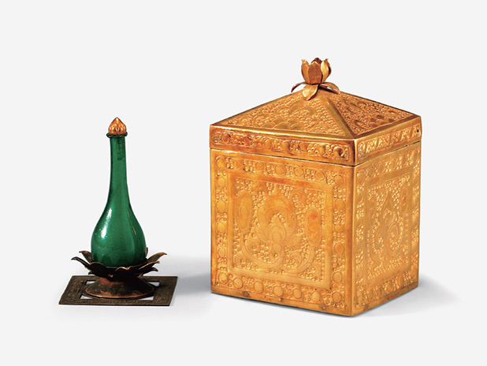
Sarira ReliquariesArchaeological Site in Wanggung-ri: From Royal Palace to Buddhist Temples
-
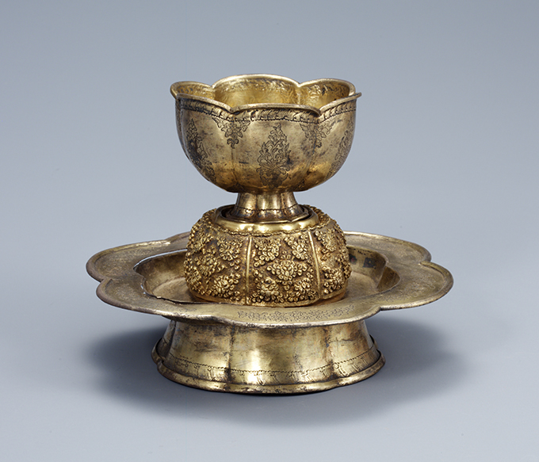
Gilt-silver Cup and StandPurpose of Cups with a Stand, Origin of Cups with a Stand
-
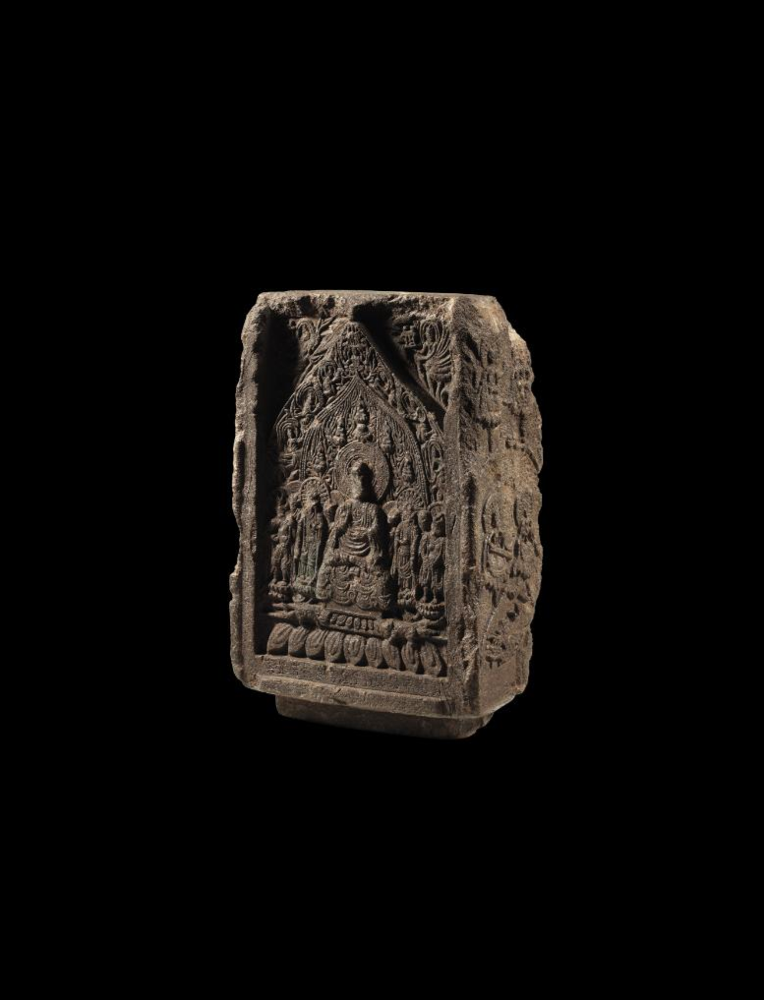
Amitabha Buddha SteleBuddhist Stele Created by Former Citizens of Baekje
-
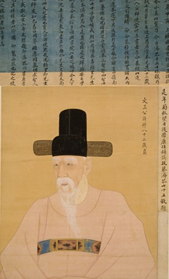
Portrait of Heo MokMasterpiece of Late Joseon Portraiture
-
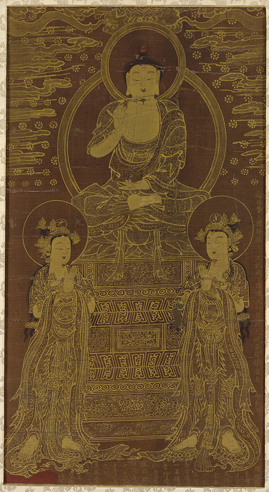
Bhaisajyaguru Buddha TriadBuddhist Stele Created by Former Citizens of Baekje
-
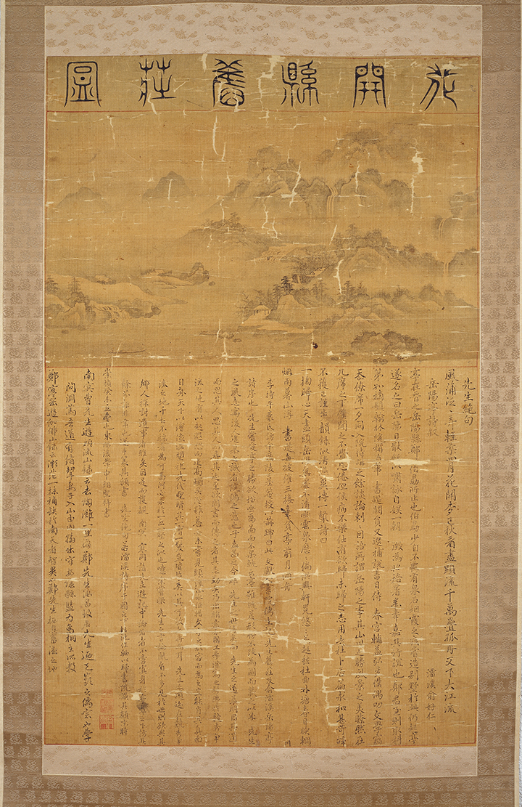
Jeong Yeochang’s VillaPainting the Beauty of Jirisan Mountain and Seomjin Rive
-
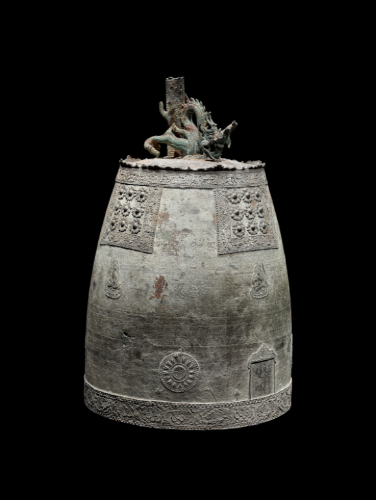
Bell with Inscription: “Fourth ..New Flower Design of the Late Goryeo Period
-
 Gong with Inscription: “Sixth Year of Xianto ..
Gong with Inscription: “Sixth Year of Xianto ..The inscription on the side of the gong is embossed in reverse script, reading from left to right
-
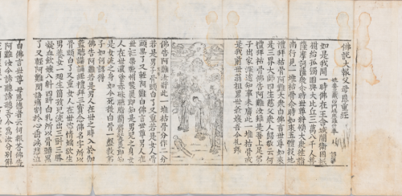
Sutra on Filial PietyDepicting the Ten Maternal Benevolences
-
 Gilt-bronze Bodhisattva
Gilt-bronze BodhisattvaIcon of Early Buddhist Sculpture of the Three Kingdoms Period
-
 Gathering of Officials from the ..
Gathering of Officials from the ..Production Date of Gathering of Officials from the Ministry
-
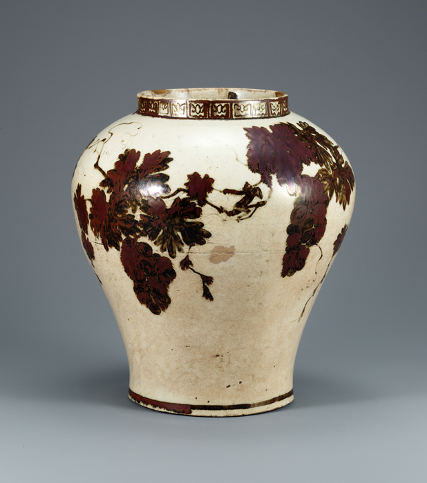
White Porcelain Jar with Grape ..Symbolic Meaning of Grapes and Monkey
-
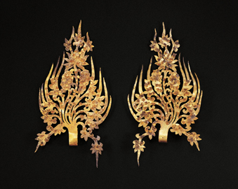
Crown Ornaments from the Tomb of King MuryeongGold Crown Ornaments Worn by King Muryeong and his Queen Consort
-
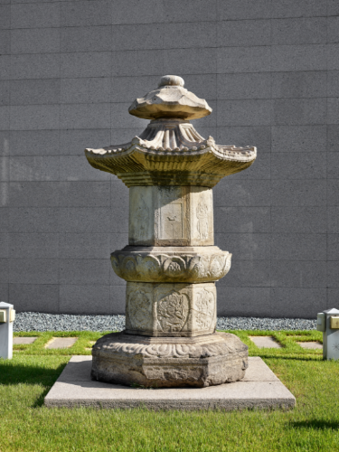
Stupa for State Preceptor Won ..Life and Faith of State Preceptor Wongong, Jijong
-
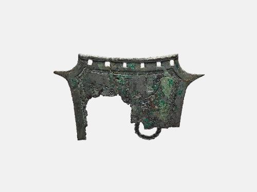
Bronze Ritual Object with Farming Sce ..Correlation to Pottery Designs and Bronze Age Fields
-
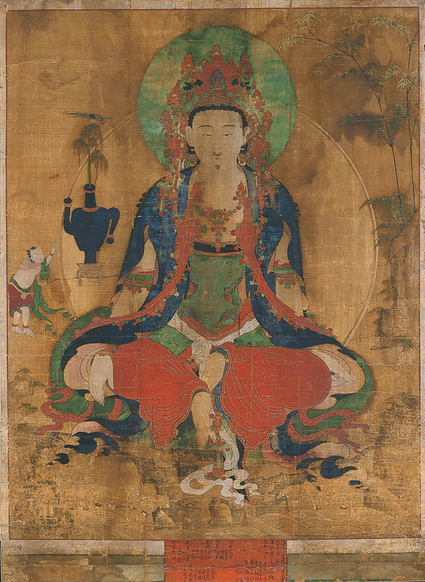
Water-Moon AvalokiteshvaraMount Potalaka, the Pure Land of Avalokiteshvara Bodhisattva
-
Gilt-bronze Buddha Triad
Buddha Triad Sharing One Halo
-
 Stone Ksitigarbha Bodh ..
Stone Ksitigarbha Bodh ..Faith in Ksitigarbha Bodhisattva and Sutras
-
Gold Crown and Gold Belt
Excavation of Hwangnamdaechong Tomb